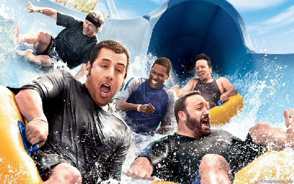
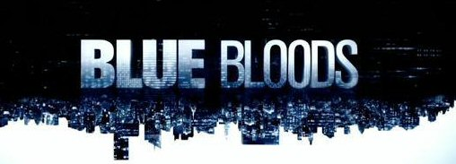

Some Personal Favorites
Top Significant Things of 2011
A little look back at the top movies, television shows, songs, and books of 2011, and my personal favorites from 2010- 2011.
Top Movies
Harry Potter and the Deathly Hollows Part II was the top grossing movie of 2011, surpassing Transformers III, The Hangover II, Twilight Breaking Dawn, and Pirates of The Caribbean Part IV at the box office. My favorite movie actually from the summer of 2010. was Grown Ups.
Top Songs
The top songs of 2011 were We Round Love (Rihana), Sexy and I know It (LMFAO), and You and I (Lady Gaga). As hilarious as Sexy and I know it was, I didn't really care for the main stream music. Personally, my favorite artists from my high school days were Skillet, Theory of a Deadman, Pop Evil, and Breaking Benjamin. The best album by far was Awake from Skillet.
Top Television Shows
There were several popular TV shows from 2010- 2011, including The Good Wife, Lost, Fringe, among many others. My favorites were Blue Bloods and The Big Bang Theory.
Favorite Book
The best book I read in 2011 was easily Laura Hillenbrand's Unbroken. Unbrokenis a World War II novel based on the true story of Louis Zamperini, an Olympic runner who was a bombadier in the Pacific Theatre. It is an exceptional book about true courage and resiliency.